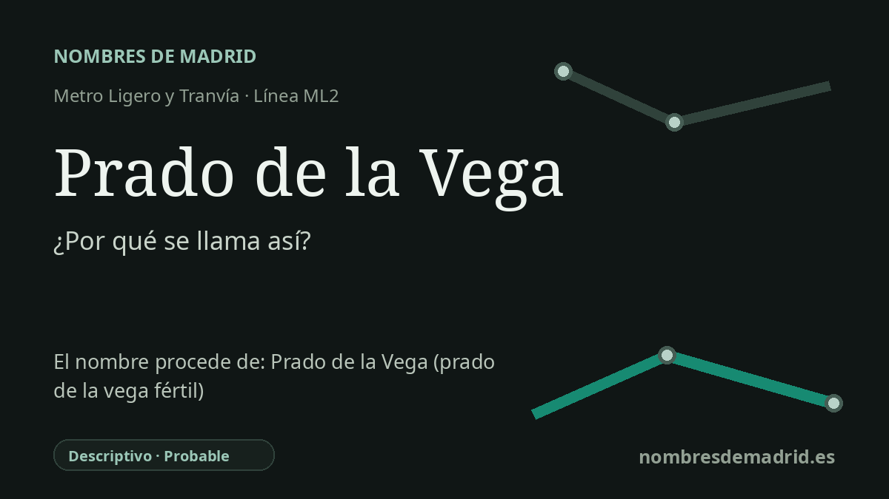

Publicado el · Investigación de Nombres de Madrid · Cómo verificamos cada origen · 8 fuentes consultadas
Respuesta rápida
Prado de la Vega toma su nombre de la zona local de Pozuelo situada junto a la estación y el hospital Quirón. Las palabras aluden a un prado o pastizal en una vega fértil, un nombre de paisaje incorporado después al callejero y al desarrollo urbano.
La historia del nombre
La estación de Prado de la Vega toma su nombre de la zona local de Pozuelo de Alarcón en la que se encuentra. Las descripciones oficiales sitúan la parada de la ML2 junto a la carretera de Carabanchel, antes de la avenida de la Carrera, al lado del Hospital Quirón; el propio Ayuntamiento de Pozuelo asocia este tramo de la línea con el hospital y con la zona residencial de Prado de la Vega.
El nombre es una descripción paisajística muy condensada. En español, prado designa una tierra húmeda o de regadío donde se deja crecer o se siembra hierba para pasto, y la Real Academia Española da como origen el latín pratum. Vega significa terreno bajo, llano y fértil, normalmente regado por un río o canal, procedente de una voz prerromana que el diccionario recoge como vaica.
Esa formulación encaja con el borde occidental de Madrid que atravesó el metro ligero a comienzos del siglo XXI: carreteras, nuevas viviendas, hospitales y áreas empresariales superpuestos a antiguos campos, tierras bajas y corredores de arroyos. La Comunidad de Madrid indica que la línea de metro ligero Colonia Jardín-Pozuelo se puso en servicio el 27 de julio de 2007, con Prado de la Vega entre sus trece paradas.
Existe además un eco arqueológico más profundo en el entorno amplio, sobre todo hacia Boadilla del Monte. Crónicas y literatura arqueológica mencionan La Vega, un asentamiento de época visigoda localizado durante obras de 1996 en el Sector 4 de Boadilla, denominado según el topónimo ya existente, así como San Babilés y otros yacimientos vinculados al arroyo de la Vega. Estos hallazgos ayudan a entender por qué los nombres de tipo vega son históricamente verosímiles en este paisaje.
Para esta estación, sin embargo, la lectura más prudente es local y descriptiva: la parada recibió el nombre de la zona pozuelera llamada Prado de la Vega, no directamente del asentamiento visigodo. No se ha localizado una fuente oficial con un acto específico de denominación ni con nombres anteriores de la estación, por lo que la fecha de nombre debe tratarse como la de apertura de la línea, el 27 de julio de 2007.